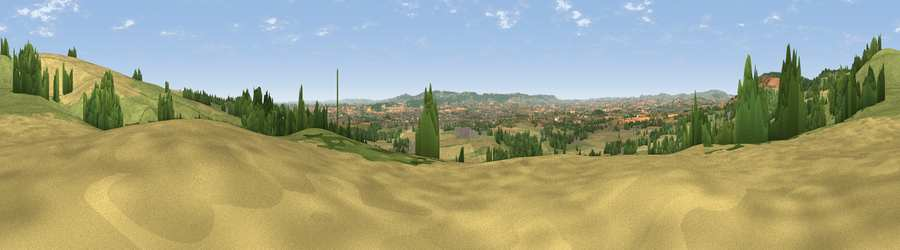

Viewpoint near Kingston St Mary
#12382 in England · top 31% of its area beats it · near Kingston St MaryThe view, rendered

A 360° render of this exact spot computed from the terrain model, tree cover and land cover — summer colours, afternoon light, calibrated against photographs of famous viewpoints. Real trees, hedges and buildings will differ in detail.
The panorama
Grey silhouette: terrain skyline in each direction (720 bearings, Earth curvature and refraction included). Dashed green: skyline with trees (+15 m) and buildings (+8 m) as obstacles. Blue strip: how far the ground is visible on each bearing.
Where the view opens
Wedge length = distance to the farthest visible ground on that bearing (vegetation-aware). Rings at 10, 25 and 50 km.
What fills the view
43% grassland · 35% cropland · 18% woodland · 4% built-up
Angular shares of the visible panorama (visual magnitude), not map area. Landscape diversity 0.51 (0–1 Shannon).
Key numbers
More beautiful places nearby
The staircase of upgrades: each row has a higher view potential than everything closer. Driving times are estimates from straight-line distance, calibrated against real road routing — check an actual route before setting out.
| Place | Direction | Drive | Score |
|---|---|---|---|
| Kingston Beacon | N · 1 km | ~3 min | 74.0 |
| Viewpoint near Broomfield | N · 3 km | ~8 min | 76.0 |
| Viewpoint near Broomfield | NW · 4 km | ~10 min | 78.5 |
| Cothelstone Hill | NW · 5 km | ~11 min | 82.1 |
| Viewpoint near West Bagborough | NW · 7 km | ~14 min | 84.3 |
| Wills Neck | NW · 8 km | ~17 min | 85.7 |
| Viewpoint near Holford | NW · 14 km | ~25 min | 85.9 |
| Viewpoint near West Quantoxhead | NW · 15 km | ~27 min | 87.8 |
51.05985, -3.10332 · source: screening · position refined by local search. Computed location — check access rights before visiting.